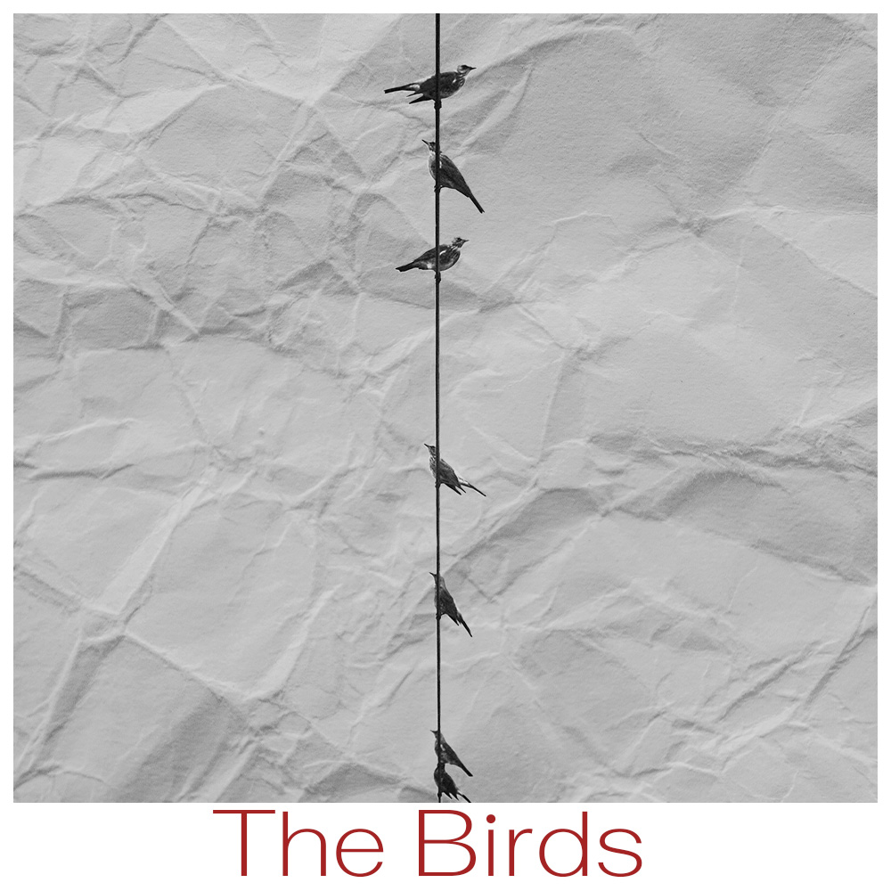
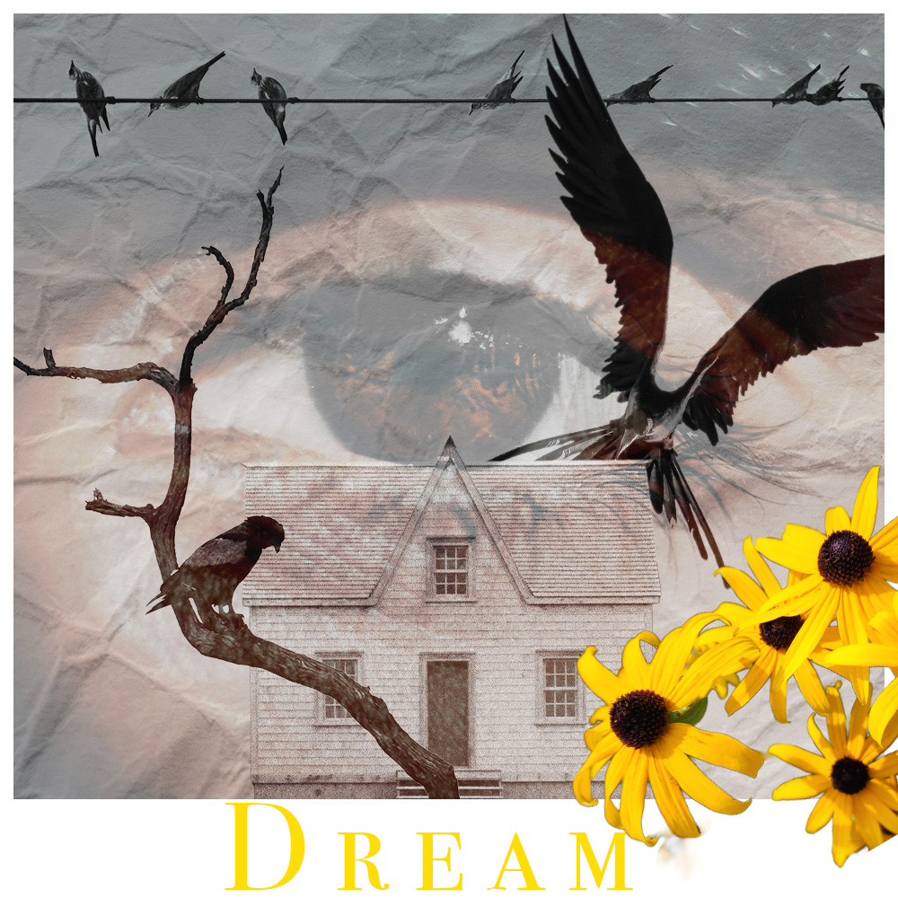
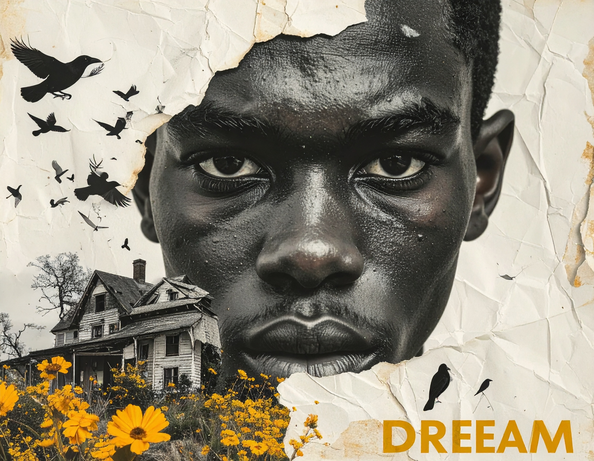

Image Project
My first two photo pieces are called The Birds and Dream. I originally wanted to create a piece that was a movie poster. I struggled with concepts I could bring together with my skill set, or just coming up with an idea in general. The old school piece, I titled The Birds. I wanted an image that was easy to select manually, but that would easily fit my original idea for a background piece on the second project. First I chose sneakers, but it was hard selecting them from the background due to the colors, or lack of contrast. My original background for the second piece was a photo I took, of ny streets and green plants. Sneakers hanging from cords would fit ny perfectly. The second and final option was birds. But I immediately saw horror film poster and tried to recreate what I saw. I checked for images I would need first, to see if any fit what I was going for. So the first piece the birds referenced the film and my own poster. The second piece was a movie poster as a dream reference to my dream of writing and directing. The ai-assisted technique compared to the old school technique was relatively faster. A.I technique made the process easier as well, as less time consuming. The fully a.i generated image was extremely close to the original concept, except it showed more colors. The most challenging part was coming up with a concept and selecting the image using the old school way.
  